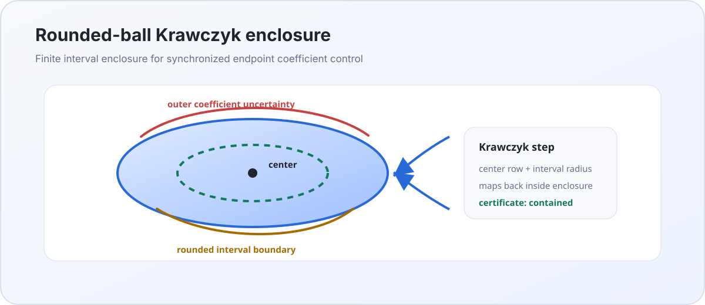

What We Are Doing
We are studying whether a Weyl/Volterra kernel is positive. The endpoint
model has a tiny negative direction. The moving trace
Lambda_a(f) detects that direction. If we remove functions
with nonzero endpoint trace, the remaining form becomes positive in the
finite tests.
K(s,t) at one point. A negative eigenvalue
means a local endpoint obstruction.
Lambda_a(f)=sum e_k(a) f^(k)(a)/k!.
V = ker R + U, where Rf=(Lambda_a f).
|b(n,u)|^2 <= C a(n,n)||u||^2 and positivity on
ker R.
Proof Audit Image Board
These pictures summarize the current publication audit: which proof links are riskiest, what kind of evidence each link uses, and how the reachable theorem graph fans out from the RH/de Branges bridge ledger.
9 x 9 Endpoint Jet Matrix at s0 = 0.5
Lowest Jet Eigenvector
This vector is the local functional coefficients. The entry at index
k multiplies f^(k)(s0)/k!.
Moving Endpoint Defect
The lowest eigenvalue stays negative until about s* = 0.5530736.
That is the active endpoint interval.
Coefficient Field e(a)
This shows why a single global eighth-order ODE chart fails:
e8(a) crosses zero near 0.1646167.
Schur / Douglas Numbers
These are the finite shadows of the continuum proof. The important
quantities are positivity on ker R, zero range residual,
and bounded Gamma*Gamma = B*A^+*B.
Endpoint Douglas Refinement
This is the current decisive test. If the finite Douglas constant
Gamma*Gamma = B*A^+*B blows up as the basis grows, the
continuum estimate is probably false or using the wrong norm. In this
endpoint stress scan it decreases.
Top Douglas Eigenvector
This is the finite \(U\)-direction that makes
Gamma*Gamma = B*A^+*B largest. The paired
ker R witness is A^+ B u. The plot shows
normalized shapes so the two curves can be compared on the same axis.
Hardy Boundary-Layer Profile
The paired witness A^+Bu is the Riesz solution that a
Hardy estimate must control. Its mass is strongly concentrated near
the right endpoint.
Riesz Spectral Amplification
The energy of A^+Bu is not carried by one endpoint mode.
The smallest modes dominate the witness norm, while several mid modes
carry most of the Douglas energy. That is why the next proof target is
a Hardy/Green estimate, not a rank-one extremizer guess.
Riesz Spectral Refinement
This scan separates the visible boundary layer from the energy estimate. The witness norm stays in the two lowest modes, but the Douglas energy moves into mid modes as the section grows.
Windowed Hardy / Green Constants
For each spectral window I, this scans
lambda_max(B* P_I A_I^-1 P_I B). The full window is the
Douglas constant; the proper windows show which bands the analytic
Hardy estimate has to control.
High-Frequency Tail Refinement
This increases basis and trace samples together. It tests whether the source tail becomes small once the moving trace is resolved, rather than only in one fixed finite section.
Source Packet Tracking
The apparent tail motion is mostly insertion of new tiny eigenvalues at the low end. This table tracks the packet and compares it with a fixed spectral cutoff.
Three-Part Certificate
This is the current proof split in finite form: pick a cutoff for the finite Schur block, bound the spectral tail, and check whether sampled endpoint traces approximate the moving continuum trace.
Endpoint Trace Refinement
This holds the basis fixed and increases sampled trace constraints. Dense trace leakage drops rapidly, showing that the continuum trace condition is the right object and sparse sampling was the source of the low-mode leak.
Full Theta Tail Visuals
These images use the finite reduced-Volterra certificate directly: active two-plane matrices, log-scale perturbation ratios, source spectral separation, and the quadratic-form landscape on the active plane.
Endpoint Grassmann Flow
The endpoint map is still badly scaled in raw coordinates, so the rank test is now tracked in normalized exterior coordinates. The persistent chart is the active minor that stays away from zero.

Fixed Representer Visuals
The direct source rows are the real theorem. The fixed-jet plots are still useful diagnostics, but the proof now keeps the Lagrange source rows together and uses interval trace range plus source-inactive tail control.
Top Vector Stability Scan
The Douglas constant decreases, but the low-order eigenvector shape is not fully stable yet. Low correlation means the finite top direction is still moving as the Galerkin space changes.